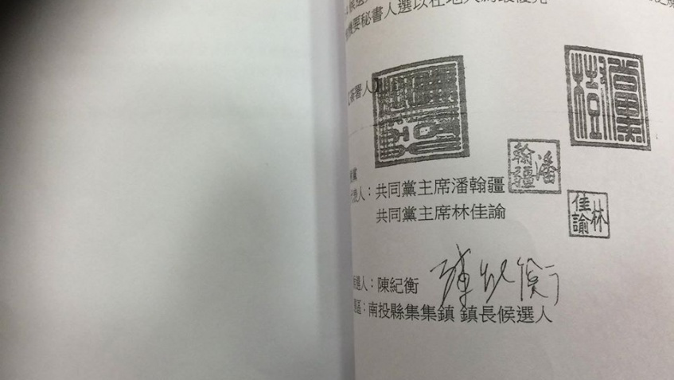
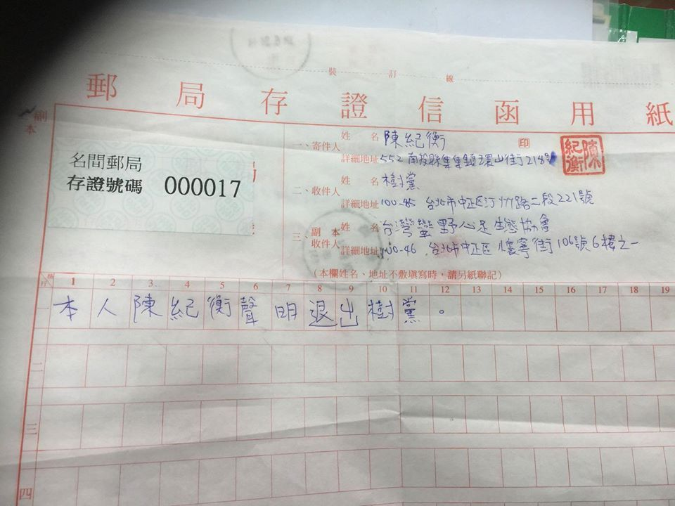
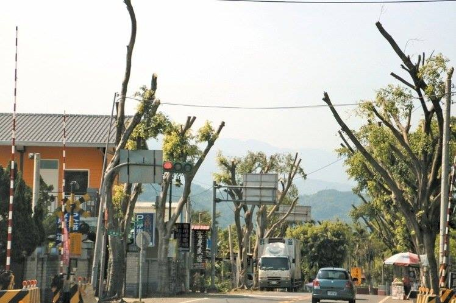

一、陳紀衡因拒絕履行候選人公約，樹黨已開除黨籍。
樹黨於2014年提名參選的候選人，為向社會大眾承諾公開透明且可課責的政治，以及回饋公民社會之基本價值，全體均依循國際環境政黨之慣例簽署〈候選人公約〉，承諾在選舉中及當選後確實履行公約。各項權利義務均於〈候選人公約〉中規範，候選人簽訂公約之對象實為全體公民、未來世代與地球眾生萬物。
由於陳紀衡當選後長期拒絕履行所簽訂之候選人公約，在樹黨與陳紀衡雙方多次溝通協調未竟之際，陳紀衡逕行於2015年06月24日於名間郵局寄出存證信函聲明退黨，中評會於2015年7月6日做出開除黨籍之處分，由於樹黨黨章規定除名須經黨員大會程序，於2016年03月26日召開之年度黨員大會中，正式決議通過開除其黨籍。

二、集集鎮多次過度修剪樹木，確實傷害生態與地方集體記憶，並危及觀光產業發展。
捍衛樹木與地球母親之權利，免於人類貪婪與無知所侵害，乃揭櫫於樹黨黨章之重要核心價值、宗旨與任務，長期以來樹黨及成員持續在各地揭發樹木之不當修剪與不當移植，絲毫不敢懈怠，特別重視透過政治途徑、官方部門，加以改善樹木與萬物棲息之生態環境。
茂盛的森林樹木乃集集重要的觀光資源，也是地方居民集體的記憶，陳紀衡在選舉期間，亦直接以行動保護集集綠色隧道及最老大樹公的棲地改善，實踐樹木保護等核心價值。然而上任後集集鎮公所卻多次發生過度修剪事件，集集鎮公所此次在八張街往台16線聯外道路兩旁十多棵茂密老榕樹之過度修剪，陳紀衡更假託老樹竄根、腐爛壓毀遊覽車與颱風危險之藉口，其說詞與行為與無異於各地環境破壞者。

三、樹黨全體對於集集鎮民、全體國人、地球母親之傷害，深切反省並鄭重公開道歉！
面對集集鎮長陳紀衡如此嚴重違背核心價值的情節，樹黨中央執行委員會全體決議公開道歉：選前未能審慎把關導致提名錯誤，亦未能約束黨員履行〈候選人公約〉，樹黨必須確切自我反省，應建立制度以避免未來有遺憾再度發生，並對社會表達出自內心最深沉的歉意。
同時，樹黨對於初入政治領域之素人工作者的培訓明顯不足，以致傷害公眾對於青年參政的期望。希望社會不要因為單一負面個案，對青年參政失去信心，甚至產生誤解與反挫。
我們將密切關注在地情勢變化，一旦持續惡化，本黨將不排除採取更進一步的行動，以亡羊補牢，負起應有的政治責任。
2016年4月22日 樹黨中央執行委員會 